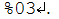
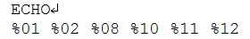
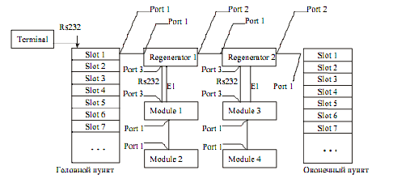

Тема №5. Устройство и эксплуатация цифровых систем телекоммуникаций
Занятие №10. Управление и аварийная сигнализация.
Учебные вопросы:
Литература:
- Многоканальные системы передачи (часть 2). Учебно-методическое пособие «Аппаратура МКСП с ЧРК». – Мн.: БГУИР, 2010.
- Учебно-наглядное пособие «Альбом схем аппаратуры МКСП». – Мн.: БГУИР, 2010.
- Касанин С.Н., Дюжов Г.Ю. Субботин С.Г. Методическое руководство «Цифровая система передачи MEGATRANS-3M». – Мн., БГУИР, 2010.
1. Управление модулями системы «Megatrans-3M».
Оборудование имеет встроенные функции управления и диагностики. Модули оборудования могут быть подсоединены посредством интерфейса RS232 к терминалу или компьютеру с возможностью эмуляции терминала для контроля, конфигурирования и вывода дополнительной информации, такой как сигнал качества xDSL- линии или характеристики G.826.
Управление модулями MGS-3M-SRL-E1B/ETH
На задней панели модульной кассеты FG-R-PCM/W располагается шина управления TTL, организованная по схеме «point/multipoint». Преобразователь уровней TTL-RS232 находится в модуле FG-ACU-SR (FG-TCU-SR), в нем же располагается разъем для подключения терминала. Для подключения терминала необходимо использовать стандартный кабель RS232 (см. табл.1.17). При подключении кабеля к СОМ-порту компьютера необходимо убедиться, что данный порт не занят драйверами каких-либо других устройств (например, мыши).
Таблица 1. Кабель для подключения управляющего компьютера к модульной кассете.
DB9, вилка (сторона кассеты |
DB25, розетка (сторона компьютера) |
DB9, розетка (сторона компьютера) |
|---|---|---|
2 |
3 |
2 |
3 |
2 |
3 |
5 |
7 |
5 |
Терминальная оболочка должна быть сконфигурирована следующим образом:
скорость передачи: 9600 бит/с;
формат передачи : 8-N-1;
управление потоком : XON/XOFF;
тип терминала: VT100.
В отдельный момент времени только один модуль в кассете может быть логически подключен к управляющему стыку. Соответствующий модуль выбирается в соответствии с номером плато-места, в которое установлен модуль. Для выбора соответствующего модуля необходимо набрать командную строку <%SN?>, где SN – номер плато-места.
Пример: Для обращения к модулю, установленному в 3-м слоте, необходимо ввести:
Модули в кассете отвечает на команду «CHO»строкой %SN, где SN – номер плато-места.
Набрав команду «ECHO» оператор получит отклик от модулей LTU, как показано:
Управление модулями MGS-3M-MRL-E1B/ETH
Терминал управления подключается к разъему MONITOR (тип DB9) расположенному на передней панели модуля. Требования к настройке терминала аналогичны требованиям для управления модулями типа SubRack. После включения питания модуля на экране ПК главное меню управления модулем появляется после нажатия клавиши Enter.
Принудительная установка адреса
Для модулей в любом исполнении, возможно, принудительно задать адрес при помощи команды SETADDR. Ввод команды SETADDR nn принудительно устанавливает адрес модуля, после чего для входа в меню соответствующего модема необходимо набрать командную строку <%nn?>. Диапазон адресов от 00 до С7 (00-99;A0-A9;B0-B9;C0-C7). Команда SETADDR 00 устанавливает модем в режим автоматического определения адреса для модулей MGS-3M-SRL-E1B/ETH (см. раздел 1.8.1) или отменяет вход в терминал по команде %nn – для модулей MGS-3M-MRL-E1B/ETH. При принудительном задании адреса для модулей типа SubRack необходимо следить, чтобы в одной кассете не оказалось двух или нескольких модулей с одинаковыми адресами. В противном случае, возможен конфликт по управлению и, как следствие, потеря возможности управления.
2. Система удаленного конфигурирования.
Система удалённого конфигурирования (Функция REMO – REmote MOnitoring)
Функция удалённого конфигурирования (REMO) позволяет осуществлять удалённый контроль и управление всех модулей системы, которые могут управляться по интерфейсу RS-232 по протоколу VT-100. К таким модулям относятся:
приёмопередатчики MGS-3L-SRL-E1B/RS232/FXx и MGS-3L-RG-XCVR;
модули кросс коммутации FG-4XE;
модули TDM FG-Plex;
модули вспомогательного регенераторного оборудования.
Рисунок 1.Структура сети сложной топологии, реализованной с использованием оборудования MEGATRANS-3M и модулей семейства FlexGain.
Основные определения.
1. С точки зрения функции REMO сеть представляет собой совокупность соединений между отдельными узлами.
2. Узлом является каждый из модулей системы (приёмопередатчик или регенератор). Обозначения на рисунке 1: Slot, Module, Regenerator).
3. Канал REMO есть “прозрачный” виртуальный канал между двумя узлами.
4. Порт (Port) есть интерфейс модуля системы.
5. Каждому порту модуля системы, через который могут быть переданы данные канала REMO, присвоен определённый адрес:
Port 0: Внутренний порт (программа управления);
Port 1: xDSL (у регенератора – N-side xDSL интерфейс)
Port 2: у регенератора – C-side xDSL интерфейс
Port 3: Интерфейс управления RS-232 (стык управления Monitor)
6. Началом канала REMO всегда является port 3 (стык управления Monitor) какого-либо из модулей (к которому подключен управляющий терминал).
7. Окончанием канала REMO является или port 3 (стык управления Monitor) или port 0 (собственно внутренняя программа управления управляемого модуля).
8. В каждый момент времени через узел (устройство) может быть организован только один канал REMO.
9. Протокол REMO поддерживает:
процедуру установления связи (организацию канала REMO);
«прозрачное» прохождение данных между началом и окончанием канала REMO;
процедуру разъединения.
10. Каждому модулю сети может быть присвоено уникальное 11-ти символьное имя (команда ID). Это имя отображается в главном меню терминала конкретного модуля.
Процедуры установления связи и разъединения
1. Команды установления и разъединения всегда должны заканчиваться нажатием клавиши «?».
2. Команды установления и разъединения начинаются символом «%»
3. Символ «%», поступающий на порт управления никогда не возвращается и не передаётся дальше. Данные, передаваемые по каналу REMO, не должны содержать символ «%».
4. Команда установления связи представляет собой последовательность «%»<путь>«?», где <путь> представляет собой последовательность адресов портов модулей, через который организовывается канал управления.
5. Команда разъединения представляет собой последовательность «%»«?».
6. Каждый узел при прохождении команды установления шлёт подтверждение в виде принятой команды, заменяя символ «%» на последовательность «%*».
7. Каждый узел передаёт команду установления до получения подтверждения или до получения новой команды установления связи.
8. Каждый узел передаёт команду разъединения до получения подтверждения разъединения. Однако, если подтверждение не получено в течение определённого времени, канал всё равно будет деактивирован.
9. Команды установления и разъединения могут быть введены в любом меню терминала.
10. Канал REMO деактивируется в случае указания неправильного пути (несуществующего адреса порта какого-либо из узлов), потери связи между узлами или при получении новой команды установления (в последнем случае будет организован новый канал REMO).
Начало канала REMO |
Окончание канала REMO |
Пример команды установления связи |
|---|---|---|
Terminal |
Slot 1 головногопункта |
%01 |
Terminal |
Regenerator 1 |
%0110 |
Terminal |
Module 1 |
%01130 |
Terminal |
Module 2 |
%011310 |
Terminal |
Regenerator 2 |
%01120 |
Terminal |
Module 3 |
%011230 |
Terminal |
Module 4 |
%0112310 |
Terminal |
Slot 1 оконечногопункта |
%011220 |
Так, если необходимо войти в главное меню первого регенератора, то необходимо ввести следующую команду: «%0110?». При этом на экране сначала будет выведено подтверждение прохождения команды установления связи, а затем – главное меню регенератора.
3. Аварийная сигнализация системы «Megatrans-3M».
При детектировании любого аварийного состояния любым из модулей приёмопередатчиков, установленных в ОУП, активируется управление реле аварийной сигнализации, которые находятся на плате модуля ACU. К контактам аварийных реле модуля ACU могут подключаться цепи управления внешней световой или звуковой сигнализации. Контакты реле могут коммутировать сигналы до 100 В / 100 мА.
Аварийная сигнализация НУП (датчики сухих контактов)
К комплекту «приёмопередатчик - LIU» регенератора может быть подключено до 3-х пар сухих контактов, но не более 5-ти пар на регенератор (при установке комплектов для двух систем в один корпус регенератора). Вывод датчиков сухих контактов осуществляется через разъём TLM корпуса регенератора.